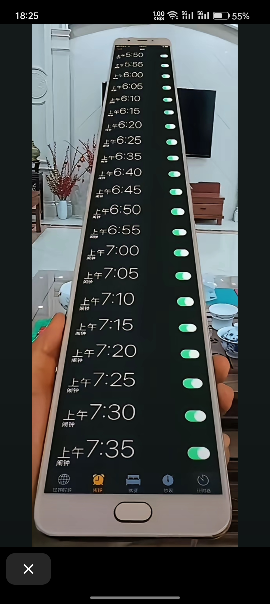
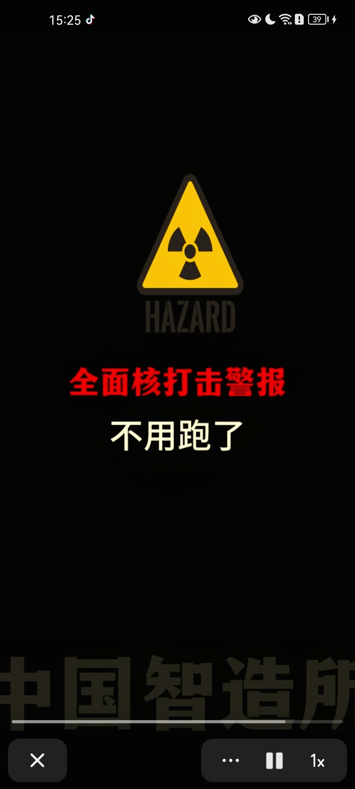

男女老少轮流把我羞辱了一遍。
这大爷走这两步 我都怕摔倒了 结果这么会玩[微笑]
这老爷子真是深藏不露呀，看着就像是一个旁观者，其实是高手[赞][赞][赞]
老爷爷以后坐地铁遇到我 能给我让个座吗
确实他不亲我，不喜欢我抱他，不喜欢我挨着他，也基本不回我信息。。但是他工资交给我
不打职业，自己的规矩就是规矩[撇嘴]
张碧晨的衣品真的很好[赞][赞][赞]每次妆发打扮都很适合她
我把声音关了外面怎么还有声音[宕机][宕机][宕机][宕机][宕机]
生化警报好强的压迫感
把生化警报设置成起床铃，这样就不会睡过头了[憨笑][憨笑][憨笑]我真是个天才[憨笑][憨笑][憨笑]
无需介绍，响了我就跑，管他这是啥警报[泪奔]
大家知道最近的防空洞在哪儿吗？
几分钟前的真实空袭警报，[捂脸]
无论第几次听到生化武器警报，我每次听我都会感觉有股很难以解释的那种情绪涌上来，绝望的催命声一样
我最怕的是这个警报⚠️ 
写的真直接[憨笑] 
发明这些警报的人真是天才，每一个都充斥着一种你要完了的感觉
预先警报0:09 空袭警报0:17 解除警报01:11 无感微弱地震预警警报01:38 有感无破坏地震警报02:01 破坏性地震预警警报02:24 海外化学生化武器警报02:46 全面核打击警报03:06
生化警报一出来我就不打算跑了…核打击出来我甚至想去楼下趁乱抢一个猫山王尝尝
生化武器警报真的听着毛骨悚然
生化武器警报，好像人类☠️最后的一丝叹息。
听到全面核打击警报，就赶紧联系自己家人告别吧[捂脸][捂脸]
希望这些警报永远不会响起
她是你弟媳三个孩子中心思最细腻的一个

这种楼梯不仅没人性还没猫性[微笑]
这是野鸡不是虞姬！
🐶：不是给你穿的，给老子扔
你小子穿拖鞋穿一半，怕咬到脚趾头是吧

真可爱，像鬼一样[奸笑]
训了3次才训明白要丢出去[九转大肠]
狗：叫你扔你就扔，穿个der，教半天教不会
送餐路上捡的小流浪长大啦[抱抱你][抱抱你]
狗:训你好几遍才懂
哎朋油 你纸团 白鸽一样的 撞向我脸 想死噢朋油
姐那一声欸 太真实了 不像演的[憨笑][憨笑]
选任素汐演的导演，绝对的省事多，演技自然，感觉就是自己生活百态，台词不用说，清楚明白，听起来都是原生台词，都不用后期再配音的那种[赞]
任素汐：不要拦我！给我打！
原来蒙古人不是蒙古人啊[捂脸]
加油话哥，终于把我的的视频想法拍出来了[灵机一动]
她的长相的确很让观众先入为主觉得她特别，怪异，这正是导演的目的[鼓掌][鼓掌][鼓掌]
前面几集小女孩这么贱，怎么后面越看越感觉是个好的了[微笑]
我记得有个演员叫陈冲，抛弃了自己的养女
养母好经典的虚伪白女，被迫害妄想，小题大做，神经过敏，自以为自己善良的不行，实际遇到真实的困难就立马抛弃跑路
建议去看原片，小女孩真的可怜而且还是真实事件改编的
真实事件就是这对养父母在收养后发现残疾侏儒症比他们想象中抚养要难的多！而找的各种理由，谎言来掩盖遗弃事实！电影里还看不出演员残疾的一面，现实生活里残疾且侏儒症真的要难的多！
珠颈斑鸠，原来是你小子
能不能来一期假装出门，然后回来抓住可乐的视频[看]
再见养蜜蜂，小灶我来了[呲牙]
可乐最近可能比较郁闷，隔壁小食堂雇了个保安[尬笑]
我和我闺蜜老了以后
这大爷年轻时也没让大娘少操心！！
让爷爷唱童年
我的社保比我都有精气神[泪奔]
这个爷爷年轻的绝对是颜值扛把子
Read more: